Module 4: Conservation of Energy#
Global variables:
Problems for Lecture 14: The Bernoulli Equation#
Question 1 (*)#
Name each of the terms in the Bernoulli equation (stated below), and describe their interaction in the work-energy interpretation of this equation.
Click here for a video explaining the problem
Question 2 (*)[R]#
Water flows within a horizontal pipe of diameter 0.1 m at a velocity of 0.2 m/s. The centreline of the pipe is located at the horizontal datum. If the pressure in the pipe is 120 kPa, calculate the pressure and velocity head within the pipe.
Answer
\( 12.232 \; m \; ; 0.002 \; m \; \)
The pressure head can be calculated with the following equation:
The velocity head can be calculated with the following equation:
You can assume the density of water is 1000 kg/m3
The “m” in pressure_m and velocity_m shows that these are head values expressed in meters.
Click here for a video explaining the problem
Solution
Show code cell outputs
Question 3 (**)[R]#
For the pipe flow described in question 2, a section of the pipe was elevated by 6 m to avoid an obstruction. Calculate the change in pressure and velocity within the pipe, and justify your answer.
Answer
\( \;61.14 \; kPa \; ; \; the \; velocity \; doesn't \; change \)
Use both mass and energy conservation principles in your answer. Note that you can assume that the diameter of the pipe is unchanged in the elevated section. Click here for a video explaining the problem
Question 4 (*)[R]#
Water discharges from a nozzle as a free jet to the atmosphere.
a. If the velocity of the jet is 3 m/s, calculate the velocity head within the jet.
b.Explain why the pressure head within the jet can be neglected
Answer
\( a) \; 0.46 \; m \)
Click here for a video explaining the problem
Question 4 (a)
The velocity head can be calculated with the following equation:
The “m” in velocity_m shows that these are head values expressed in meters.
Estimation Tip: Before or after you dive into full calculations, try estimating the velocity head using \(2g \approx 20\). It’s a useful way to check whether your answer falls within a reasonable range and to gradually build numerical intuition.
Solution
Show code cell outputs
Question 4 (b)
Solution
-->Pressure is atmospheric within a free jet.
Question 5 (*)#
A pipe containing oil (density = 960 kg/m3) has a diameter of 0.1 m.
a. If the discharge within the pipe is 0.06 m3 /s, calculate the velocity head within the pipe.
b. If the pressure head is 12 m, calculate the pressure within the pipe.
Answer
\( a) \; 2.97 \; m \)
\( b) \; 11.3 \; kPa \)
Click here for a video explaining the problem
Question 5 (a)
To determine the velocity head, you’ll first need to apply mass conservation to calculate the velocity in the pipe.
Question 5 (b)
The pressure can be solved from the following equation of the pressure head:
The “m” in pressure_m shows that these are head values expressed in meters.
Question 6 (**)#
A tank has a circular base (diameter = 1.5 m) and is filled with water to a height of 0.8 m. A small drain pipe with a diameter of 20 mm is opened at the base of the tank, which discharges water as a free jet to the atmosphere.
a. Determine the discharge of water out of the tank.
b. Some time later, the height of water in the tank is 0.3 m. Determine the new discharge of water out of the tank at this time.
c. Both of the above calculations assume that the flow is steady out of the tank, i.e. that the rate at which the water height in the tank changes is very slow compared to the velocity out of the tank. Based on your answer to (a), comment on whether this assumption is reasonable
Answer
\( a) \; 0.0012 \; m^3/s \)
\( b) \; 0.0008 \; m^3/s \)
Click here for a video explaining the problem
Question 6 (a)
Apply the Bernoulli equation between a point at the surface of the tank and in the free jet. Assume no energy losses.
Consider whether pressure is atmospheric at either of these points.
Solution
-->Considering the jet is free to the atmosphere, the variables in point 2 will be:
Considering that point 1 is in contact with the atmosphere, we have the following:
\(p_{atm}\)=0 Pa
\(V_1\)= is near 0 m/s because the tank is large
Using this values you have the following equation:
This equation is the Torricelli’s law:
And the discharge of the tank is
Show code cell outputs
Question 6 (b)
Use a similar approach to part a, recognising that the elevation of a point at the free surface will have reduced to 0.3 m.
Solution
Show code cell outputs
Question 6 (c)
To assess whether the steady-flow assumpt ion is reasonable, we need to consider whether the water level in the tank decreases slowly relative to the velocity of the outflow. For that reason, the velocity at which the free surface falls needs to be calculated. You can apply the Continuity equation and a suitable control volume to calculate this.
Solution
-->
Show code cell outputs
The initial change in water level of the tank is 0.7 mm/s, so this is reasonable.
Question 7 (*)[R]#
Water flows from a pipe of 1m diameter through a nozzle of 0.2m diameter before exiting as a free jet.
a. If the velocity in the free jet is 3 m/s, calculate the discharge and velocity in the pipe.
b. Calculate the pressure within the pipe.
c. State any assumptions made in the above calculations.
Answer
\( a) 0.094 \; m^3/s \; ; 0.120 \; m/s \; \)
\( b) \; 4.49 \; kPa \)
Click here for a video explaining the problem
Question 7 (a)
Apply mass conservation to calculate these quantities.
Question 7 (b)
We can use Bernoulli equation to calculate the pressure within the pipe:
Consider which (if any) of these terms can be cancelled in your calculations.
Question 7 (c)
Question 8(*)[R]#
Water flows from a large reservoir through a 100 mm pipe before exiting the pipe as a free jet at a location 5 m below the water surface of the reservoir. Calculate the discharge within the pipe.
Answer
\( 0.08 \; m^3/s \)
Apply the Bernoulli equation to determine the velocity. When calculating the discharge, you may assume that the free jet has the same diameter as the pipe. Click here for a video explaining the problem
Solution
-->The assumptions for this problem are the following:
\(p_{atm}\)= 0 Pa \(V_1\)= is near 0 m/s because the reservoir is large \(p_{pipe}\)= 0 Pa because it is exposed to atmospheric pressure
Considering these simplifications, the Bernoulli equation simplifies to the Toricelli equation
Show code cell outputs
Question 9 (**)[R]#
Oil (density = 940 kg/m3) flow through a pipe of diameter 120 mm. At some location in the pipe, the diameter is reduced to 90 mm.
a. If the pressure and velocity in the wider (120 mm) section of the pipe are 280 kPa and 5 m/s respectively, calculate the discharge in the pipe.
b. Calculate the velocity and pressure in the constricted section.
Answer
\( a) 0.057 \; m^3/s \; \)
\( b) 8.89 \; m/s \; ; 254.61 \; kPa \; \)
Click here for a video explaining the problem
Question 9 (a)
The discharge in the pipe can be calculated as:
Question 9 (b)
The velocity can be calculated as:
To calculate the pressure we can use the Bernoulli equation:
Question 10(***)#
Water flows in an open channel with a constant width of 1.5 m. At some point in the channel A, the depth is 0.5 m and the velocity is 2.5 m/s. The channel then steps down 1.0 m in a smooth transition to point B. Show that the water depth at B, 𝑑𝐵, can be expressed as: \(d_B= \frac{V_Ad_A}{\sqrt{V_A^2+2g(d_A+1-d_B)}}\) where 𝑣𝐴 is the velocity at point A, 𝑔 is the gravitational acceleration, and 𝑑𝐴 is the water depth at point A.
Use the Continuity equation to relate the velocities at points A and B:
Then use this to substitute into the Bernoulli equation:
Replace the pressure terms using:
Click here for a video explaining the problem
Solution
-->We can use Bernoulli equation to show that the water depth can be expressed as the equation showed in the question.
The assumptions are the following
The pressure in point 1 and 2 can be expressed with the following equation
Then we can used the the conservation of mass to calculate the velocity in section B.
Organizing the equation we have that
Problems for Lecture 15: Energy Grade Line and Hydraulic Grade Line#
Question 1 (*)[R]#
Water flows within a horizontal pipe of diameter 0.1 m at a velocity of 0.25 m/s. The centreline of the pipe is located 2.5 m above the horizontal datum. If the pressure in the pipe is 120 kPa, calculate the height of the EGL and HGL relative to datum.
Answer
\( 14.74 \; m \; , \;14.73 \; m \)
The energy grade line can be calculated as:
The hydraulic grade line can be calculated as:
Click here for a video explaining the problem
Question 2 (*)#
Water flows from a large reservoir through a 200 mm pipe before exiting the pipe as a free jet at a location 4.5 m below the water surface of the reservoir.
a. Calculate the discharge within the pipe.
b. Draw the HGL and EGL for this problem.
Answer
\( a)\; 0.295 \; m^3/s \)
Click here for a video explaining the problem
Question 2 (a)
Remember that the discharge in the pipe will be equal to the discharge within the jet (conservation of mass), and the velocity in the jet can be determined by applying the Bernoulli equation between a point in the reservoir and a point in the free jet. This will simplify to the Toricelli equation.
Solution
Show code cell outputs
Question 2 (b)
The EGL (Energy Grade Line) is the total energy at each point along the flow. This includes the kinetic energy and the potential energy. Considering there is no friction loss in this exercise, the EGL should be a straight line, strarting from the water surface to the jet exit.
The HGL (Hydraulic Grade Line) represents the sum of the pressure head and the elevation head. At the reservoir, the HGL will be at the same level of the water surface, but as the water moves down the jet, the HGl will drop. This occured because the pressure head in the free jet is essentially zero as the pressure is atmospheric.
Solution
Show code cell outputs

Tips: The length of the pipe (and even its elevation) does not affect the answer to part (a); it would simply require extending the hydraulic grade line (HGL), which remains below the energy grade line (EGL) but above the centreline of the jet.
Question 3 (**)[R]#
In the situation illustrated in the figure, the water height h is 200 mm.
a. Calculate the discharge through the pipe.
b. Calculate the pressure in the narrow section.
c. Draw the EGL and HGL for this problem.

Answer
\( a) \;0.0156 \; m^3/s \)
\( b) \;-29.4 \; kPa \; (gauge\;pressure) \)
Click here for a video explaining the problem
Question 3 (a)
Remember that the discharge in the pipe will be equal to the discharge within the free discharge (conservation of mass), and the velocity in this free discharge can be determined by applying the Bernoulli equation between a point in the reservoir and a point in the free discharge. This will simplify to the Toricelli equation.
Question 3 (b)
To solve this problem, apply the Bernoulli equation between a point in the narrow section of the pipe and a second point—either within the reservoir or at the location of the free discharge.
Question 3 (c)
The EGL (Energy Grade Line) is the total energy at each point along the flow. This includes the kinetic energy and the potential energy. Considering there is no friction loss in this exercise, the EGL should be a straight line at the level of the water surface.
The HGL (Hydraulic Grade Line) represents the sum of the pressure head and the elevation head. At the reservoir, the HGL will be at the same level of the water surface. As the water flows down the pipe, the HGL will drop due to the increasing velocity, but when the diameter is reduced, the HGL decreases due to the increment in velocity. At the pipe exit, the pressure head becomes zero, so the HGL will end at the same level as the exit of the pipeline.
Question 4 (**)[R]#
Water flows out of a large tank and through the pipeline as shown in Figure 2.
a. Construct the energy grade line and hydraulic grade line for the pipe, labelling the relevant quantities on your diagram.
b. Using your solution to part (a), calculate the pressure and velocity within the 200mm diameter section of the pipe.
c. State any assumptions you have made within your answers to (a) and (b)

Answer
\( b) \;43.53 \; kPa \;,\; 3.32 \; m/s \; \)
Click here for a video explaining the problem
Question 4 (a)
The EGL (Energy Grade Line) is the total energy at each point along the flow. This includes the kinetic energy and the potential energy. Considering there is no friction loss in this exercise, the EGL should be a horizontal line, strarting from the water surface to the exit of the pipeline.
The HGL (Hydraulic Grade Line) represents the sum of the pressure head and the elevation head. At the reservoir, the HGL will be at the same level of the water surface, but as the water flows down the pipe, the HGL will drop at each point due to the increasing velocity. At the pipe exit, the pressure head becomes zero, so the HGL will end at the same level as the exit of the pipeline
Solution
Show code cell outputs

Question 4 (b)
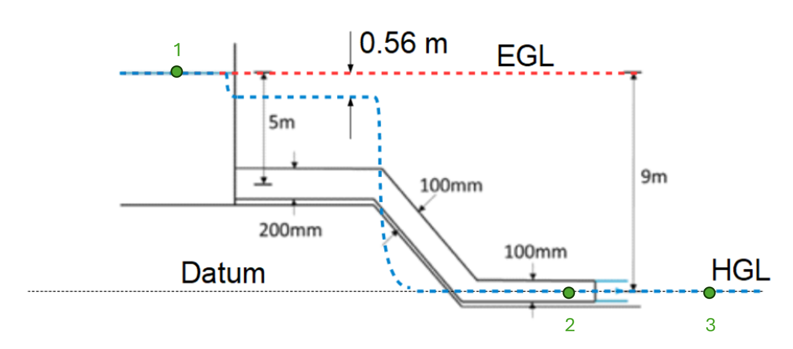
The velocity can be calculated with the Toricelli equation in the pipe exit.
Once the velocity at the exit is calculated, the discharge can be determined with:
Once the discharge is calculated, the velocity in the 200 mm diameter pipe can be determined by using the conservation of mass
Once the velocity in this pipe is calculated, the Bernoulli equation can be determine between the surface of the tank and that pipe
The following assumptions can be made
Using this, the Bernoulli equation for this exercise is:
Solution
Show code cell outputs
Question 4 (c)
Solution
-->Incompressible fluid, no losses in pipe, diameter of free discharge is equal to pipe diameter.
Question 5 (**)[R]#
An object is placed in an open channel such that a stagnation point (zero velocity) is created on the leading edge of the object. You may assume that the density of water is equal to 1000 kg/m3 for this problem.
a. If the water in the channel is flowing at a velocity of 2 m/s, calculate the dynamic pressure at the stagnation point.
b. If the object is replaced by a pitot tube, which also creates a stagnation point within the same flow, calculate the height to which water would rise in the pitot tube.
c. A short time later, the velocity in the open channel has changed. The water level in the pitot tube is now 150 mm. Calculate the new velocity in the channel.
d. Explain which line is represented by the water level in the pitot tube, and which line is represented by the water level in the channel itself.
Answer
\( a) \;2 \; kPa \)
\( b) \;h= \; 0.204\; m \)
\( c) \;1.72 \; m/s \)
Click here for a video explaining the problem
Question 5 (a)
Apply the Bernoulli equation between two points: point 1 located within the flow, and point 2 at the stagnation point:
Remember that the velocity will be zero at the stagnation point.
Question 5 (b)
The height to which water would rise in the pitot tube can be solved from the following equation:
The height of water in the pitot tube above the water surface in the channel will be equal to the velocity head in the channel.
Solution
Question 5 (c)
Again, you can apply the Bernoulli equation between a point in the flow and the stagnation point, or simply recognise that the water level in the pitot tube above the water surface in the channel will represent the velocity head.
Question 5 (d)
Question 6 (**)[R]#
Water flows through a pipe (diameter of 50 mm). A pitot tube placed in the flow measures a water height of 150 mm relative to the centre of the pipe, and a piezometer at the side of the pipe measures a water height of 90 mm relative to the centre of the pipe.
a. Determine the average velocity of the water flowing in the pipe.
b. Calculate the dynamic pressure at the stagnation point of the pitot tube.
c. Draw the EGL and HGL for this problem.
Answer
\( a) \;1.08 \; m/s \)
\( b) \;589 \; Pa \)
Click here for a video explaining the problem
Question 6 (a)
The piezometer measures the pressure head component of the Bernoulli equation along with the elevation head (𝑧). The Pitot tube measures the pressure head, the velocity head, and the elevation head (z). This means the Pitot tube measures the Energy Grade Line (EGL) while the piezometer measures the Hydraulic Grade Line (HGL).
Considering the equation for HGL:
And the equation for EGL:
The difference between the lines is equal to the velocity head.
Solution
Show code cell outputs
Question 6 (b)
The dynamic pressure (\(\Delta p\)) can be calculated using the formula:
Solution
Show code cell outputs
Question 6 (c)
The piezometer measures the pressure head component of the Bernoulli equation along with the elevation head (𝑧). The Pitot tube measures the pressure head, the velocity head, and the elevation head (z). This means the Pitot tube measures the Energy Grade Line (EGL) while the piezometer measures the Hydraulic Grade Line (HGL).
Considering the equation for HGL:
And the equation for EGL:
We know that the Energy Grade Line (EGL) is 0.15 m and the Hydraulic Grade Line (HGL) is 0.09 m. Assuming there are no friction losses, both lines will be horizontal.
Solution
Show code cell outputs

Question 7 (**)#
Water flows through the pipe shown in the figure with a velocity of 3 m/s (in the 200 mm section of the pipe).
a. If the pressure in the 200 mm section of the pipe is 350 kPa, calculate the pressures in the other two sections of pipe.
b. Draw the EGL and HGL for this problem.

Answer
\( a) \;319.78 \; kPa\;,\;178.72\; kPa \)
Click here for a video explaining the problem
Question 7 (a)
The pressure in the 120 mm section can be calculated using the Bernoulli equation between the 200 mm and the 120 mm sections:
The pressure in the 80 mm section can be calculated using the Bernoulli equation between the 120 mm and the 80 mm sections:
As the pipe is horizontal, \(z_1=z_2\), and \(V_2\) and \(V_2\) can be calculated considering conservation of mass:
Question 7 (b)
The EGL (Energy Grade Line) is the total energy at each point along the flow. This includes the kinetic energy and the potential energy. Considering there is no friction loss in this exercise, the EGL should be a straight line.
The HGL (Hydraulic Grade Line) represents the sum of the pressure head and the elevation head.This line will drop with each reduction in diameter due to the increase in velocity.
The difference between the lines is equal to the velocity head.
Problems for Lecture 16: Flow Measurement#
Question 1 (*)#
Using the measurements from a Venturi Meter, you have calculated that the discharge through a pipe system should be 24 litres per second. To check this theoretical discharge, you have captured a volume of 4.0 m3 from the pipe system. It took 3 minutes to collect this volume. Calculate the discharge coefficient.
Answer
\( 0.926 \)
To calculate the discharge coefficient (𝐶𝑑), we need to compare the actual discharge with the theoretical discharge obtained from the Venturi meter. Don’t forget that you can calculate the discharge by dividing the total volume collected by the time taken.
Click here for a video explaining the problem
Question 2 (*)#
Using the measurements from an Orifice Meter, you have calculated that the discharge through a pipe system should be 3.0 litres per second. You use a calibration tank with a surface area of 0.4 m2 to check this discharge. If the water level in the calibration tank rises at a rate of 4 mm/s, calculate the discharge coefficient.
Answer
\( 0.533 \)
To calculate the discharge coefficient (𝐶𝑑), we need to compare the actual discharge with the theoretical discharge obtained from the Venturi meter. In this case, the actual discharge can be determined by multiplying the rate of water level rise by the surface area of the tank.
Click here for a video explaining the problem
Solution
-->The actual discharge flow can be calcualted as
Show code cell outputs
Question 3 (**)#
Using the measurements from a Venturi Meter, you have calculated that the discharge through a pipe system should be 13 litres per second. Downstream of the Venturi Meter, you have installed a piezometer and a pitot tube. If the difference in water levels between the piezometer and the pitot tube is 70 mm, and the pipe diameter is 0.1 m, calculate the discharge coefficient.
Answer
\( 0.708 \)
The water level in the piezometer is the HGL and the water level in the pitot tube is the EGL. The difference between those two water levels (EGL and HGL) is the velocity head. From the velocity head, you can calculate the velocity and hence discharge in the pipe system.
Click here for a video explaining the problem
Question 4 (**)[R]#
Water flows in an open channel of 2.0 m width. At some point in the channel, the water flows over a smooth submerged object that is 1.0 m high. If the water depth upstream of the object is 2.5 m and the depth downstream of the object is 0.5 m, calculate the discharge in the channel.
Answer
\( 6.4 m^3/s \)
Use a combination of the Bernoulli equation and the Continuity equation, in a similar approach to that used for a Venturi Meter. Recall that the cross-sectional area is given by the water depth multiplied by the channel width, and the HGL is always at the water surface. See the worked example at the start of Lecture 16 for detailed working.
Click here for a video explaining the problem
Question 5 (**)#
Water flows in an open channel of 1.2 m width. At some point in the channel, the water flows over a smooth submerged object. If the water depth upstream of the object is 1.2 m and the depth downstream of the object is 0.4 m, and the actual discharge in the channel is 1.6 m3/s, calculate the discharge coefficient
Answer
\( 0.79 \)
Use a combination of the Bernoulli equation and the Continuity equation, in a similar approach to that used for a Venturi Meter. Recall that the cross-sectional area is given by the water depth multiplied by the channel width, and the HGL is always at the water surface. See the worked example at the start of Lecture 16 for detailed working.
The discharge coefficient is given as the ratio of the actual discharge to the theoretical discharge.
Click here for a video explaining the problem
Solution
-->Conservation of energy:
Conservation of mass:
Reeplace the velocity equation in the Bernoulli eqution:
The area is:
Substituting the area and rearranging the equation
Show code cell outputs
Question 6 (*)[R]#
A Venturi Meter has a pipe diameter of 120 mm and a throat diameter of 50 mm. When water is flowing through the Venturi Meter, the pressure in the pipe and the throat is recorded using piezometers. If the difference in water height in the two piezometers is 50 mm, calculate the discharge in the Venturi Meter.
Answer
\( 1.975 L/s \)
Use the equation for the theoretical discharge through a Venturi Meter, assuming no losses. If you want to solve this problem from first principles, use a combination of the Bernoulli equation and the Continuity equation and recognise that the water level in the piezometers will give the height of the HGL.
Click here for a video explaining the problem
Solution
Show code cell outputs
Question 7 (**)[R]#
A Venturi Meter has a pipe diameter of 120 mm and a throat diameter of 50 mm (i.e. the same as in Question 6). Now, however, the piezometers are replaced with a differential manometer filled with mercury (S.G. = 13.5). If the differential manometer registers a height difference of 20 mm, calculate the discharge passing through the Venturi Meter.
Answer
\( 0.004 m^3/s \)
The difference between this and the last exercise is that the last one is with piezometers and this one with differential manometer. For that reason, you can not use \(\Delta h\) because that is the height of the mercury. The first step is to change \(\Delta h\) to \(\Delta p\).
Use the equation for the theoretical discharge through a Venturi Meter, assuming no losses. If you want to solve this problem from first principles, use a combination of the Bernoulli equation and the Continuity equation. Note that in this case the pressure difference between the pipe and the throat is measured using a differential manometer, so you can’t directly use the \(\Delta h\) term as this is the difference in mercury levels. See Lecture 16 for an explanation of the approach when dealing with a differential manometer, and the second example problem in Lecture 17.
Click here for a video explaining the problem
Question 8 (**)[R]#
A Venturi Meter has a pipe diameter of 180 mm and a throat diameter of 60 mm. When water is flowing through the Venturi Meter, the pressure in the pipe and the throat is recorded using piezometers. If the difference in water height in the two piezometers is 70 mm, and the discharge coefficient is 0.95, calculate the actual discharge in the Venturi Meter.
Answer
\( 3.17 L/s \)
Calculate the theoretical discharge and use the discharge coefficient to calculate the actual discharge.
Use the equation for the theoretical discharge through a Venturi Meter, accounting for the actual discharge using the discharge coefficient. If you want to solve this problem from first principles, use a combination of the Bernoulli equation and the Continuity equation and recognise that the water level in the piezometers will give the height of the HGL.
Click here for a video explaining the problem
Solution
Show code cell outputs
Question 9 (**)[R]#
An orifice plate (internal diameter of 30 mm) is placed in a pipe with a diameter of 80 mm. With water flowing through the pipe, the pressure difference recorded by two piezometers attached to the orifice plate is 300 mm.
a. If the coefficient of discharge of the orifice plate is equal to 0.6, calculate the actual discharge flowing through the pipe.
b. With the aid of a sketch, show the main source of energy loss associated with water flow through an orifice plate. Include an illustration of the location of the two piezometers, and explain why we can use these measurements to determine the discharge.
Answer
\( 1.04 L/s \)
Click here for a video explaining the problem
Question 9 (a)
Calculate the theoretical discharge with the Equation for flow rate through an orifice. Then use the discharge coefficient to calculate the actual discharge.
Question 9 (b)
The main source of energy loss when water flows through an orifice plate is due to the sudden contraction and expansion of the flow as it passes through the orifice. This energy loss is associated with flow separation at the edges of the orifice, leading to turbulent eddies and vortex formation.
You can use the same equation as for the theoretical discharge through a Venturi Meter, accounting for the actual discharge using the discharge coefficient. The internal diameter of the orifice plate is equivalent to the diameter of the throat.
Question 10 (***)#
A Venturi Meter has a pipe diameter of 120 mm and a throat diameter of 50 mm. When water is flowing through the Venturi Meter, the pressure in the pipe and the throat is recorded using piezometers. The difference in water height in the two piezometers is 80 mm. Downstream of the Venturi Meter, water passes through a nozzle and exits as a free jet to the atmosphere.
a. If the jet velocity is 3 m/s and the jet diameter is 0.02 m, calculate the discharge coefficient.
b. Calculate the pressure within the pipe.
Answer
a) \(0.37\)
b) \(4496.5\) Pa
Click here for a video explaining the problem
Question 10 (a)
The discharge coefficient is the ratio of actual discharge to theoretical discharge. The former can be calculated using the conservation of mass, while the latter can be determined using the equation for the theoretical discharge through a Venturi Meter. If you want to solve this problem from first principles, use a combination of the Bernoulli equation and the Continuity equation to determine the theoretical discharge, and recognise that the water level in the piezometers will give the height of the HGL.
Solution
Show code cell outputs
Question 10 (b)
We can use the Bernoulli equation (between a point in the pipe and a point in the jet) to calculate the pressure within the pipe. Use the actual flow conditions in this solution.
Solution
-->From the Bernoulli equation we have:
Assuming \(p_3=0\) because the pressure is atmospheric, and calculating \(V_1\) as \(V_1=Q_a/A_1\), we can solve \(p_1\).
Show code cell outputs
Problems for Lecture 18: Energy Equation#
Energy equation#
Question 1 (*)#
Water flows up pipe AB (5 m long, 40 mm diameter) and along BC (3 m long, 30 mm diameter) at 1.75 L/s. If the measured pressure at A is 250 kPa, and the pipe friction loss between A and C is 1.45 m, find the pressure at C. Neglect local energy losses caused by the diameter change and bend at B.

Answer
\( \;184.63 \; kPa \)
Apply the Energy equation between points A and C
Question 2 (*)[R]#
A vertical pipe of 1.5 m diameter and 20 m length has a pressure head at the upper end of 6.3 m. When the flow of water is such that the mean velocity is 5.6 m/s, the pipe friction head loss hf= 1.09 m. Find the pressure head at the lower end of the pipe when the flow is a)downwards and b) upwards.
Answer
$ a) ;25.2 ; m ;;
b) ;27.4; m $
Apply the Energy equation.
Question 2 (a)
Solution
-->
Show code cell outputs
Question 2 (b)
Solution
-->
Show code cell outputs
Question 3 (*)#
Water is to be delivered from a reservoir through a 50 mm diameter pipe to a lower level and discharged into the air as shown below. If the flow rate is 0.00631 m3/s and the headloss in the entire system is 11.58 m, determine the vertical distance between the point of water discharge and the water surface in the reservoir.
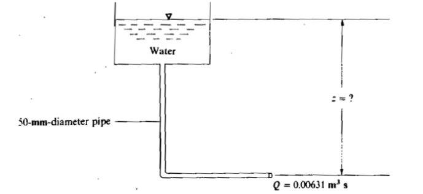
Answer
\( \;12.1 \;m \)
Solution
-->
Show code cell outputs
Question 4 (**)[R]#
If h = 10.5 m in the figure below and the pressures at A and B are 170 and 275 kPa respectively, find the direction of flow and the pipe friction headloss. Assume the liquid has a specific gravity of 0.85.
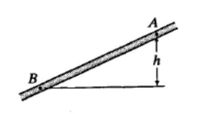
Answer
\( \;2.09 \;m\; ; \;flow \; is \; from\; B \; to \; A \)
Solution
-->Assume the flow is from A to B,
Show code cell outputs
So the flow is from B to A.
Question 5 (**)#
A 50 mm diameter siphon is drawing oil (s = 0.82) from an oil reservoir as shown below. If the headloss between points 1 and 2 is 1.50 m and between points 2 and 3 is 2.40 m, find the discharge of oil from the siphon and the oil pressure at point 2.
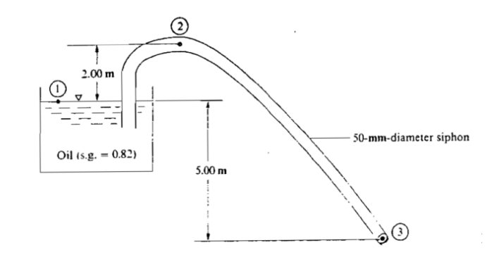
Answer
\( \;9.1 \;L/s \; ; \;-37 \;kPa \)
Apply Benoulli equation from 1 to 3. Then apply benoulli eqution from 1 to 2.
Solution
-->Apply Benoulli equation from 1 to 3,
\(A2 = A3\) thus,\(V_2 = V_3\)
Show code cell outputs
Question 6 (***)#
Water flows through the system shown below. The reading on the pressure meter is 180 kPa.If the mass flow is 15 kg/s, what is the frictiona l headloss between points 1 and 2? Assume that 50% of the losses occur in the nozzle head and draw the energy and hydraulic grade lines of the system.
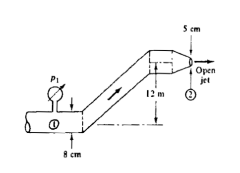
Answer
\( a)\;3.83 \;m \)
Question 6 (a)
Apply Bernoulli equation between 1 and 2.
Solution
-->
Show code cell outputs
Question 6(b)
Solution
-->
Show code cell outputs
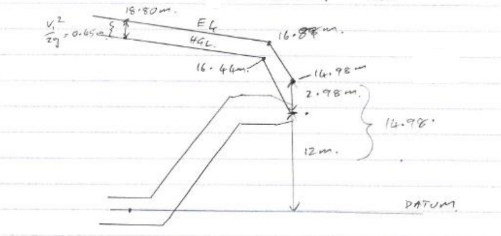
Question 7 (***)[R]#
The friction losses in the suction pipe of the system shown in the figure below aregiven by the equation hL= \(1.6 \frac{v^2}{2 g}\). The barometer reading is 90 kPa and the suction pipe has a velocity of 1.8 m/s. What is the maximum allowable value of z if the liquid is a) water at 20 ℃; b) petrol with a vapour pressure of 49 kPa and a specific weight of 8 kN/m3?
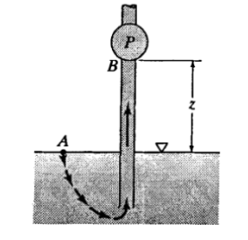
Answer
$ a);8.5 ;m;
b);4.7 ; m; $
Question 7(a)
Solution
-->From Bernoulli equation from A to B, where, to prevent cavitation, \(p_B = p_min = p_{\nu}\)
from which, \(z_B = \frac{90 - p_{\nu}}{\gamma}-0.429\)
Table A.1 for water at 20 ℃：
Show code cell outputs
Question 7(b)
Solution
Show code cell outputs
Question 8 (***)#
Water flows between two tanks as shown in the figure below. The flowrate through the pipe is 16 l/s, and the saturation vapour pressure of the water is -93 kPa. Answer the following question: a). What is the total headloss in the system of flow between the tanks ? b). At what diameter d of the pipe constriction will cavitation start? Assume that the additional head loss due to the constriction is negligible.
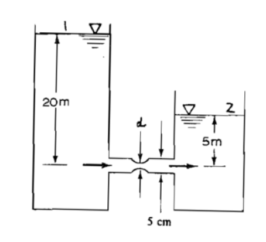
Answer
$ a);15 ;m;
b); 31.3 ; mm; $
Question 8 (a)
Solution
-->\(z_2 = 0\;\)Datum, \(p_1=p_2=0\;\)atmospheric,\(V_1 = V_2 = 0\;\)large area
thus, \(h_f = z_1 = 20-5 = 15m\)
Question 8 (b)
Solution
-->Assume headloss to constriction = \(\frac{1}{2}\) of total h_f Apply Bernoulli equation from 1 to 3,
\(z_3 = 0\;\)Datum, \(p_1=0\;\)atmospheric,\(V_1= 0\;\)large area
\(V_3^2 = \frac{Q^2}{A_3^2}\;\)thus,
Show code cell outputs
Power#
Question 9 (**)#
A 150 mm diameter pipe is discharging water through a turbine. The velocity in the pipe just upstream of the turbine is 36 m/s and the pressure 100 m. The pipe diameter remains the same on the downstream side of the turbine. Calculate the maximum power that the turbine can deliver if losses are ignored.
Answer
\( \;624 \;kW\; \)
Solution
Show code cell outputs
Question 10 (**)[R]#
A pump with efficiency 90% lift water between two reservoir with a water level difference of 155 m at a flow rate of 7.5 m3 /s. The friction head loss in the pipe is 13 m. What is the input power requirement of the pump?
Answer
\( \;13.73 \;MW\; \)
Solution
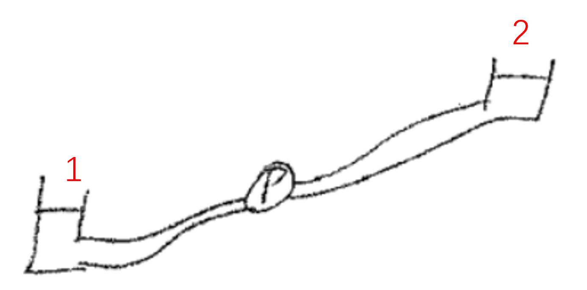
\(p_1 = p_2 = 0\) atmoaspheric
\(V_1 = V_2 = 0\) large tank
thus,\(h_{pump} = h_f + (z_2 -z_1)\)
Show code cell outputs
Question 11 (**)#
After entering a pump through a 180 mm diameter pipe at 35 kPa, oil (s = 0.82) leaves the pump through a 120 mm diameter pipe at 120 kPa. The suction and discharge sides of the pump are at the same elevation. Find the rate at which energy is delivered to the oil by the pump if the flow rate is 70 L/s.
Answer
\( \;6.83 \;kW\; \)
Solution
-->\(z_1 = z_2\) and \(h_f = 0\)
Show code cell outputs
Question 12 (***)#
Water is supplied from a reservoir to a powerhouse that is located at an elevation of 325 m below that of the reservoir surface (see figure). The jet has a nozzle diameter of 250 mm with a velocity of 75 m/s through the nozzle.Determine the power loss due to friction between the reservoir and the jet, as well as the potential power of the jet. Draw the energy and hydraulic grade lines of the system assuming that 15 % of the friction losses occur in the nozzle.
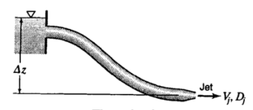
Answer
\( \;1383 \;kW\;10.35\;MW\; \)
Solution
-->\(p_1=p_2 = 0\)atomspheric, \(V_1 = 0\),and \(z_2 = 0\)
thus,\(h_L = z_1 - \frac{V_2^2}{2g}\)
Show code cell outputs
Problems for Lecture 19: Laminar flow in pipes#
Reynolds number#
Question 1 (*)#
Crude oil with a kinematic viscosity of 1 x 10-3 m2/s flows through a 100 mm pipe at 5 m/s. Calculate the Reynolds number of the flow. Will the flow be laminar or turbulent?
Answer
\( \;500 \;;\;laminar \)
Question 2 (*)#
Water at 15 °C flows through a 100 mm pipe at 5 m/s. Calculate the Reynolds number of the flow. Will the flow be laminar or turbulent?
Answer
\( \;438 \;, \; 596 \;;\;turbulent \)
Solution
Show code cell outputs
As Re is > 4000, the flow is turbulent.
Question 3 (*)[R]#
Water at 15 °C flows through a 100 mm pipe. What is the maximum velocity and flow rate for the flow to be laminar?
Answer
\( \;0.023 \; m/s \; ; \; 0.179 \;L/s \)
Laminar pipe friction losses#
Question 4 (*)#
A pipe with diameter 100 mm and length 1000 m carries water at 15 °C. Calculate:
a. The maximum flow rate at which laminar flow will occur in the pipe.
b. The head loss in the pipe at this flowrate.
Answer
\( a) \;0.18 \; L/s \)
\( b) \;0.0085 \; m \)
Question 4 (a)
Flow is laminar at Re < 2000.
Solution
Show code cell outputs
Question 4 (b)
Solution
Show code cell outputs
Question 5 \(\text{(*)}\)#
Oil with μ = 4.8 x 10-2 kg/ m and ρ = 800 kg/m3 flows through a 25 mm diameter pipe with a mean velocity of 0.3 m/s. Check that the flow in the pipe is laminar and then calculate the head loss in a pipe with a length of 45 m.
Answer
\( a) \;4.23 \; m \;of \;oil \)
\( b) \; 0.6 \;m/s \)
For laminar flow: Re < 2000
For turbulent flow Re > 4000
Problems for Lecture 20: Turbulent flow in pipes#
Turbulent pipe friction losses#
Question 1 (*)#
Calculate the head loss in the pipes below at Reynolds numbers of 1 500 and 150 000
a) A 100 mm internal diameter pipe with a length of 1000 m and an absolute roughness of 0.01 mm.
b) A 200 mm internal diameter pipe with a length of 1000 m and an absolute roughness of 0.1 mm.
c) A 150 mm internal diameter pipe with a length of 2000 m and an absolute roughness of 0.01 mm.
Answer
\( a) \;6.36 \; × \; 10^{-3} \;m \; ; \; 25.30 \; m \)
\( b) \;0.8 \; × \; 10^{-3} \;m \; ; \; 3.57 \; m \)
\( c) \;3.77 \; × \; 10^{-3} \;m \; ; \; 14.82 \; m \)
A Reynolds number of 1500 means the flow is laminar, while a Reynolds number of 150000 is for turbulent flow. The head loss is
Question 1 (a)
Question 1 (b)
Question 1 (c)
Question 2 (**)#
Determine i) the flow regime (laminar, transitional, smooth turbulent, transitional turbulent or rough turbulent) and ii) the headloss for each of the systems described below:
a. A pipe with diameter 200 mm carries water at 10 °C with a velocity of 0.01 m/s. The pipe has an absolute roughness of 0.2 mm and a length of 1000 m.
b. A pipe with diameter 200 mm carries water at 10 °C with a velocity of 0.1 m/s. The pipe has an absolute roughness of 0.2 mm and a length of 1000 m.
c. A pipe with diameter 200 mm carries water at 10 °C with a velocity of 10 m/s. The pipe has an absolute roughness of 0.2 mm and a length of 1000 m.
Answer
\( a) \;laminar \;0.0011 \; m \)
\( b) \;transitional\; turbulent \;0.074 \; m \)
\( c) \;transitional\; turbulent\;505.86 \; m \)
Calculate Reynolds number and relative roughness.
Determine the flow regime from the Moody diagram.
For laminar flow, calculate losses using the Hagen-Poiseuille equation.
For turbulent flow, calculate losses using the Darcy-Weisbach equation.
Question 2 (a)
Solution
Show code cell outputs
Question 2 (b)
Solution
Show code cell outputs
Question 2 (c)
Solution
Show code cell outputs
Question 3 (**)[R]#
A pipe with diameter 150 mm has an absolute roughness of 0.2 mm and a length of 500 m carries water at 15 °C.
a) *What is the maximum flow rate at which the water flow in the pipe will be laminar, and what will the head loss through the pipe be at this flow rate?
b) *If the velocity of water in the pipe is 2 m/s, what will the head loss in the pipe be?
c) **If the Reynolds number of the flow in the pipe is 100 000, what will the head loss of the pipe be per kilometer of pipe?
Answer
\( a) \;0.27 \; L/s \; ; \; 0.001 \;m \)
\( b) \;14.90 \; m \)
\( b) \;2.3 \; m \)
Question 3 (a)
Question 3 (b)
Question 3 (c)
Question 4 (**)#
Select any pipe diameter between 20 and 500 mm. Assume a pipe roughness of 0.2 mm
and a length of 1 km. Ensure that you cover the full range from laminar to rough turbulent
flow and calculate both laminar and turbulent head loss in the transitional zone. Plot the
following parameters as a function of the Reynolds number:
• Velocity
• Flow rate
• Darcy-Weisbach friction factor f (for turbulent flow only - plot it on a copy of the
Moody diagram)
• Pipe head loss
Indicate the following areas on your graphs:
• Laminar, transitional and turbulent flow
• Smooth turbulent, transitional turbulent and rough turbulent flow
Question 5(***)[R]#
If the diameter of a pipe is doubled, what effect does this have on the flow rate for a given headloss if the flow is
a) laminar and
b) rough turbulent.
Answer
\( a) \;increase \;flow \; by \; a \; ratio \; of\;16 \)
\( b) \;5.7 \)
Question 5 (a)
Solution
-->If the head loss is given, the flow rate is proportonial to:
If the diameter is double, the flow rate will increase by a ratio of 16
Question 5 (b)
Solution
-->If the head loss is given, the flow rate is proportonial to:
If the diameter is double, the flow rate will increase by a ratio of 5.7
Turbulent flow rate#
Question 6(***)#
The system shown below has a pipe diameter of 350 mm, a friction coefficient f = 0.016. The distances BC is 12 m, DE is 920 m and \( \Delta z\) is 48 m. Find the maximum theoretical flow rate if water at 15 °C is pumped in the system at an altitude of 1000 m above sea level. Point C is 6 m above the lower water surface. Work from basic principles and assume f remains constant.

Answer
\( \;0.59 \; m^3/s \)
Solution
Table A.1, water in 15°C the \(\frac{p_v}{\gamma}\)= 0.17 m
Table A.3 for 1000 m elevation \(p_{atm}\)= 89.876 kPa abs
Using Bernoulli equation between water surface A to pump intake C using absolute pressure heads when \(p_C=p_v\)
The velocity in those to points is the same:
Problems for Lecture 21: Further Equations and Local Losses#
Darcy-Weisbach equation for laminar flow#
Question 1 (**)[R]#
A pipe with diameter 100 mm and length 1000 m carries water at 15 °C. Calculate:
a. the maximum flow rate to which laminar flow will occur in the pipe
b. the head loss in the pipe at this flow rate using the Hagen-Poiseuille equation
c. the head loss in the pipe at this flow rate using the Darcy Weisbach equation
Answer
\( a) \;0.179 \; L/s \)
\( b) \;0.00848 \; m \)
\( b) \;.00848 \; m \)
Question 1 (a)
The maximum flow rate to which laminar flow will occur is when \(Re=2000\).
Question 1 (b)
Question 1 (c)
Question 2 (**)#
Oil with μ = 4.8 x 10-2 kg/m.s and ρ = 800 kg/m3 flows through a 25 mm diameter pipe with a mean velocity of 0.3 m/s. Check that the flow in the pipe is laminar and then calculate the head loss in a pipe with a length of 45 m using a) the Hagen-Poiseuille equation, and (b) the the Darcy-Weisbach equation.
Answer
a) \(4.23\) m of oil
b) \(4.23\) m of oil
Question 2 (a)
Determine the type of flow with Reynolds equation and calculate the head loss with the Hagen-Poiseuille equation.
Solution
Show code cell outputs
Question 2 (b)
Calculate the head loss using Darcy-Weisbach equation. When the flow is laminar the following equation can be used to calculate the friction factor:
Solution
Show code cell outputs
Question 3 (***)#
A rectangular conduit has side lengths of 2 and 4 m. Calculate the diameter of the circular pipe that will have the same hydraulic radius (and thus the same headloss) as this conduit.
Answer
\(2.67\) m
Think of the general equation for the hydraulic radius and set it up for the case of a circular conduit. This expression will be equal to the hydraulic radius of the rectangular conduit.
Question 4 (**)[R]#
A circular pipe with a diameter of 100 mm, a length of 1 500 m and an absolute roughness of 0.5 mm carries water at a temperature of 15°C and a velocity of 1 m/s.
a. Calculate the headloss in the pipe.
b. Calculate the headloss if the circular pipe is replaced with a square pipe that has the same cross-sectional area.
Answer
a) \(24.24\) m
b) B = 0.089 m; Re = 78458; f = 0.032; hf = 27.77 m
Question 4 (a)
The first step is to determined the type of flow through Reynolds equation. Once it is known if the flow is laminar or turbulent, the most appropriate head loss equations can be used.
Question 4 (b)
To calculate the Reynolds number in a square shape it is necessary to find the relationship between D and R.
Solution
-->
Show code cell outputs
Question 5 (***)#
A triangular conduit has three equal sides, each with a length of 4 m. Calculate the diameter of the circular pipe that will have the same headloss as this conduit for both laminar and turbulent flow. For turbulent flow, assume that f is the same for the two pipe shapes.
Answer
\(2.31\) m
Identify the head loss equation that should be used according to the flow regime. Then, write it in terms of the hydraulic radius to solve for the diameter.
Local losses#
Question 6 (**)#
Look the local loss coefficients up in an appropriate table and calculate the local loss for the following cases:
a. A fully open 100 mm diameter gate valve carrying a flow rate of 10 L/s.
b. A fully open 100 mm diameter gate valve carrying a flow rate of 20 L/s.
c. A short radius elbow in a 100 mm diameter pipe carrying a flow rate of 10 L/s.
Answer
a) ≈0.02 m
b) ≈0.06 m
c) ≈0.07 m
Question 6 (a)
Look for the local loss coeficcient of a fully open gate valve.
Solution
Show code cell outputs
Question 6 (b)
Look for the local loss coeficcient of a fully open gate valve.
Solution
Show code cell outputs
Question 6 (c)
Look for the local loss coeficcient of a short radius elbow.
Solution
Show code cell outputs
Question 7 (**)[R]#
Consider a 100 mm internal diameter plastic pipe with a length of 1000 m and an absolute roughness of 0.01 mm.
a. What should the secondary loss coefficient k be to have a secondary loss one tenth of the friction loss at Re = 4000?
b. Calculate the friction, secondary and total head losses for the pipe at a Re = 105. Use the secondary loss coefficient found in (a).
c. Did the proportional contribution of the secondary loss to the total head loss increase or decrease between (a) and (b)? Why did it change?
Answer
a) 40.67
b) 14.92
Question 7 (a)
With the Reynolds number, we can calculate the velocity, and from that, the friction loss. Then, calculate the secondary loss coefficient, knowing that it is 1/10 of the friction loss.
Question 7 (b)
Calculate the new velocity with Reynolds.
Question 7 (c)
The contribution of the secondary loss to the total head can be calculated as:
K is constant, but f reduces when Re changes from 4000 to 100000.
Question 8 (***)#
Two service reservoirs are connected using a pipe with a diameter of 150 mm, a length of 5 000 m and a friction factor f of 0.025. The difference in water levels of the two service reservoirs is 65 m, and the pipe has a total secondary loss coefficient of 60. Assume a water temperature of 15 °C. Calculate the flowrate in the pipe. {Q = 21.76 L/s}
Answer
21.76 L/s
Having the water levels difference between the two reservoirs is possible to use the following equation of total head
Solution
-->
Show code cell outputs
Problems for Lecture 23: Pipes in series and parallel#
Pipes in Series#
Question 1 (*)#
Calculate the equivalent length of two pipes in series. Pipe 1 has a length of 1000 m, a diameter of 300 mm and a friction factor f of 0.024. Pipe 2 has a length of 500 m, a diameter of 100 mm and a friction factor f of 0.024. For the equivalent pipe, use a diameter of 300 mm and a friction factor f of 0.024. Work from basic principles.
Answer
\( \;122500 \; m \)
For pipes in series the conservation equations of mass and energy are:
Conservation of Mass \(Q_E= Q_1=Q_2\)
Conservation of Energy \(h_{fE}= h_f1+h_f2\)
Question 2 (**)[R]#
A pipe with an internal diameter of 500 mm, a roughness coefficient f = 0.020 and a length of 1 000 m is placed in series with a pipe with an internal diameter of 1500 mm, a roughness coefficient f = 0.022 and a length of 1 000 m. The two pipes are used to link two reservoirs with a head differential of 30 m. Ignore local losses and calculate the following:
a. The length of the 1 500 mm diameter pipe above that will be equivalent to the two pipes in series.
b. The flow rate between the reservoirs.
c. The energy head where the two pipes are joined (use the bottom reservoir level as datum).
Answer
\( a) \;221 909 \; m \)
\( b) \;751.5 \; L/s \)
\( c) \;0.135 \; m \)
Question 2 a)
For pipes in series the conservation equations of mass and energy are:
Conservation of Mass \(Q_E= Q_1=Q_2\)
Conservation of Energy \(h_{fE}= h_f1+h_f2\)
Solution
-->
Show code cell outputs
Question 2 b)
The flow rate can be solved from the friction loss equation.
Solution
-->The flow rate can be solved from the friction loss:
Show code cell outputs
Question 2 c)
The conservation of energy between point A and B can be used, including the energy lossed between those points.
Solution
-->Conservation of energy= \(H_A= H_B+ h_f\)
Pressure in the tank A is atmospheric and the velocity is 0.
Show code cell outputs
Question 3 (**)#
A pipeline 300 m long discharges freely at a point 50 m lower than the watersurface at the intake (see figure below). The first 200 m of pipe has a diameter of 350 mm and the remaining 100 m has a diameter of 250 mm. The junction point C is 40 m below the intake water surface level. Ignore secondary losses and work from basic principles to answer the following questions:
a) Find the rate of discharge, assuming f = 0.06 for both pipes.
b) Find the pressure head just upstream of C.
c) Find the pressure head just downstream of C.
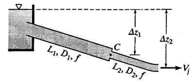
Answer
\( a) \;264 \; L/s \)
\( b) \;26.46\; m \)
\( c) \;25.37 \; m \)
Question 3 a)
Show code cell outputs
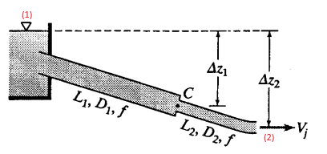
Considering the following points 1 and 2.
Apply the Bernoulli equation between these points
For pipes in series the conservation equations of mass and energy are:
Conservation of Mass \(Q_E= Q_1=Q_2\)
Conservation of Energy \(h_{fE}= h_f1+h_f2\)
After calculating the length, the Bernoulli equation between point 1 and 2 can be used:
We can use the following equation:
Show code cell outputs
Question 3 b)
Considering the following points 1 and 2.
Apply the Bernoulli equation between these points
Show code cell outputs
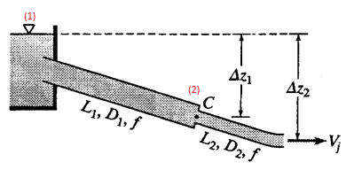
Question 3 c)
Apply the Bernoulli equation between downstream C and the end of the pipe.
Pipes in parallel#
Question 4 (*)#
Two reservoirs are connected by two parallel pipes with diameters of 100 mm and 200 mm respectively. Both pipes have lengths of 1000 m and friction coefficients f = 0.035. Work from basic principles to estimate the equivalent diameter of the two pipes. Assume that the equivalent pipe has a length of 1000 m and an f of 0.035.
Answer
\( \;213 \; mm \)
For pipes in parallel, the conservation of mass is:
Use the Darcy-Weishback equation.
Solution
-->Calculating Q with Darcy-Weisbach equation:
As in parallel pipes:
Show code cell outputs
Question 5 (**)[R]#
A 200 mm diameter pipe with length of 500 m and roughness coefficient f = 0.025 is placed in parallel with a 500 mm diameter pipe with length 500 m and f = 0.030. The total flowrate in the system is 600 l/s. Ignore minor losses.
a. Calculate the diameter of an equivalent pipe with length 500 m and f = 0.030. Work from basic principles.
b. Use the equivalent pipe to calculate the headloss in the system.
c. Calculate the flow rate in each of the two parallel pipes.
d. Check that the sum of the flows in the two pipes equals the known system flow (or is close to it).
Answer
\( a) \;0.521 \; m \)
\( b) \;11.57\; m \)
\( c) \;58.9\; L/s \; ; \; 54. \; L/s \)
Question 5 a)
For pipes in parallel the conservation equations of mass and energy are:
Conservation of Mass \(Q_E= Q_1+Q_2\)
Conservation of Energy \(h_E= hf_1=hf_2\)
Question 5 b)
Use the Darcy-Weisbach equation to calculate the friction losses.
Question 5 c)
Use the Darcy-Weisbach equation to calculate the flow rate
Question 5 d)
Problems for Lecture 25: System curve and pump operating point#
Question 1 (**)[R]#
A 200 mm pipe with length 3 000 m and f = 0.122 is used in the system below. The end of the pipe is 20 m above the water level. Calculate the energy head that the pump must add to the system to deliver a velocity of 2 m/s? Ignore local losses and losses in the suction pipe. Solve the problem from basic principles.
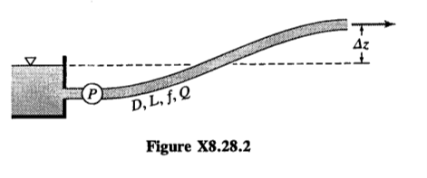
Answer
\( \;393.3 \; m \)
The energy head that the pump must add to the system can be calculated from the conservation of energy between the tank and the end of the pipe.
In the tank \(z_1 =0, P_1=0, V_1=0\) in the end of the pipe \(P_2=0\) for atmospheric pressure because the jet is outside the pipe
Question 2 (**)[R]#
A pumped supply system will be used to transport water at 15 °C between two reservoirs with a total head difference of 50 m. The pipes of the system consist of a 600 m long pipe on the suction side of the pump with diameter 200 mm and absolute roughness 0.2 mm; and a 2 km long pipe on the delivery side of the pump with diameter 150 mm and absolute roughness of 0.2 mm. The suction and delivery pipes have total local loss coefficients of 80 and 200 respectively. The pump impeller eye is located 4 m below the water level in the suction reservoir. The required flowrate in the system is 40 L/s. Determine the following:
a) The working point of the pump to deliver the required flowrate.
b) The classification of the flow in the suction and delivery pipes based the zones defined on the Moody diagram.
c) The minimum input power required by the pump if the pump efficiency is assumed to be 75%.
Answer
\( a) \;191 \; m \; ; \; 40 \; L/s \)
\( b)\) Both transitional turbulent
\( c) \;99.8\; kW \)
Question 2 a)
The working point of the pump is the total head that the pump must supply to achieve the required flow rate of 40 L/s. For this, it is required to calculate the energy losses in the suction and delivery pipes, including the friction, local losses, and the total head difference.
Where:
\(h_p\) = is the total head of the pump
\(h_{h}\) i th total head difference between the two reservoirs
\(h_{fs}\)= is the friction loss of the suction pipes
\(h_{fd}\)= is the friction loss of the delivery pipes
\(h_{fs}\)= is the locas losses of the suction pipes
\(h_{fd}\)= is the local losses of the delivery pipes
Solution
-->Calculate the velocity and reynolds number. If the flow is turbulent, the Colebrook White equation can be used to calculate the friction factor
If the flow is laminar, the following equation can be used:
The next step is calculate the head losses for the suction and delivery pipe with the following equation:
Then, the local head losses can be calculated with:
Finally, the total head required by the pump can be calculated.
Show code cell outputs
The working point of the pump is:
Question 2 b)
The flow is turbulent when the Reynolds number is above 4000.
Solution
-->Considerin the values for the Reynolds number in the suction and delivery pipe are:
Both are turbulen flow.
Question 2 c)
The power of the pump can be calculated as:
Solution
Show code cell outputs
Question 3 (**)#
A pumped supply system will be used to transport water at 15 °C between two reservoirs with a total head difference of 50 m. The system consists of a 2 km long pipe with diameter 150 mm and absolute roughness 0.2 mm. The pipe has a total secondary loss coefficient of 200. The required flow rate in the system is 50 L/s. Determine the following for the system (work from basic principles):
a) The working point of the pump to deliver the required flow rate.
b) The minimum input power required by the pump if the pump efficiency is assumed to be 75%.
Answer
\( a) \;250.59 \; m \)
\( b) \;163.89\; kW \)
Question 3 a)
Apply the conservation of energy between the two reservoirs, including the minor and friction losses and the pump height.
The viscosity of water can be obtained from a table.
Question 3 b)
To calculate the minimum input power required by the pump consider the following equation:
Question 4 (**)#
The tanks, pump and pipelines of the system below have properties as shown. The suction line entrance from the pressure tank is flush and the discharge into the open tank is submerged If the pump P adds 1.5 kW to the system:
a) Determine the flow rate
b) Find the pressure in the pipe on the suction side of the pump. Ignore local losses.
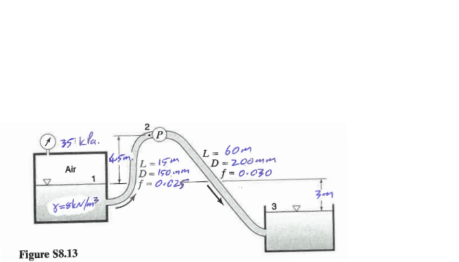
Answer
\( a) \;103 \; L/s \)
\( b) \;-49.48 \; kPa \)
Question 4 a)
To determine the flow rate, the equation for the conservation of energy can be used:
The following assumptions can be made:
Solution
-->Considering the assumptions, the Bernoulli equation is:
The friction losses of the pipes can be replaced with the following equation in terms of Q:
We have the following equation:
This equation can be rearranged to calculate the flow rate, resulting in three solutions: two negative and one positive. Since flow rate cannot be negative, the valid solution is the positive value derived from the cubic equation.
Show code cell outputs
Show code cell outputs
Question 4 b)
The pressure in suction pipe can be calculated using the Bernoulli equation between point 1 and point 2
The assumptions for the Bernoulli equation are:
Solution
-->The conservation of Energy for this exercise is:
Replacing the friction losses in the Bernoulli equation:
Show code cell outputs
Problems for Lecture 26: Cavitation in Pumps#
Question 1 (***)[R]#
A pump is installed at 1000 m (patm = 90 kPa) above sea level where the maximum water temperature is estimated to be 20°C (pvap = 2.3 kPA). The pump eye is 2 m above the suction water level. The suction pipe has a velocity of 2 m/s, a friction headloss of 1.2 m and a minor loss of 0.5 m. Calculate the NPSH available for the pump.
Answer
\( 5.24 m \)
Set up the energy equation for this problem to calculate the absolute pressure at the pump’s inlet. Then, calculate the Net Positive Suction Head (NPSH).
Question 2 (***)[R]#
Consider the figure below. Assume a pipe diameter or 350 mm, f = 0.016 and the lengths of BC = 12 m, DE = 920 m and \(\Delta z\) = 48 m. Water at 15°C is pumped from the lower to the upper reservoir. The system is located at altitude of 1000 m above sea level. Point C is 6.0 m above the surface of the lower reservoir. The pump has an NPSHrequired = 2 m. Ignore minor losses and calculate the maximum flow rate that the system will be able to provide without experiencing cavitation.
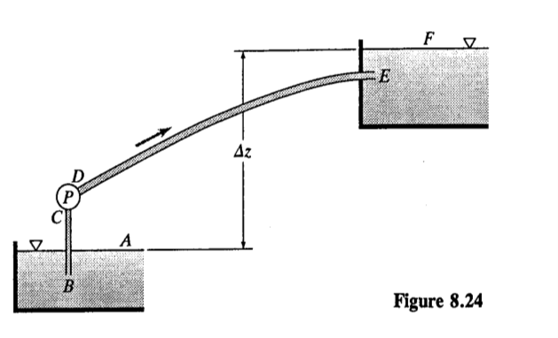
Answer
\( 0.575 m^3/s \)
To calculate the maximum flow rate, both the total head equation of the system and the NPSH equation for cavitation must be considered.
The height at point F is equal to the height of point A plus the height provided by the pump, minus the head loss due to friction in the suction and delivery pipes.
Solution
-->From the table of Physical properties of water at standard sea-level atmospheric pressure, at T=15°C:
From the able of The ICAO standard atmosphere, at 1000 m above sea level:
The pressure and velocity at point C can be determined using the Bernoulli equation between points A and C. The following terms are derived from the conservation of energy equation
The conservation of energy equation between points A and C is given by
The assumptions for applying the conservation of energy are that \(z_A\)= 0 m and \(V_A\) is approximately zero, since the tank is very large. With these assumptions, the Bernoulli equation simplifies to
We can substitute the values provided in the problem statement and in the tables:
Replacing this values we have:
By using equation (2) and substituting it into equation (1), we obtain a system of two equations with two unknowns
Once the velocity is calculated, the flow rate can be determined with the following equation: